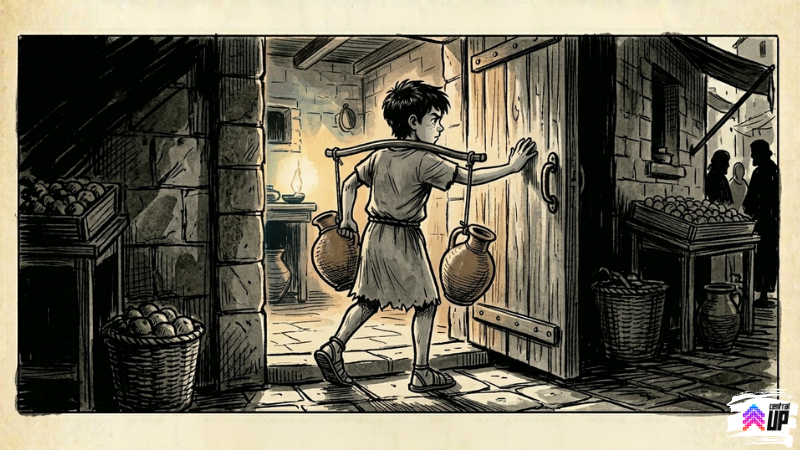
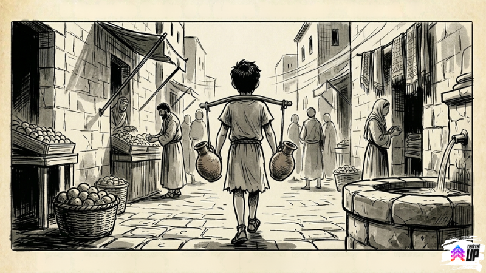

Este devocional abre no sábado, 11/04!
Este devocional abre no sábado, 11/04!
Mesma jarra. Mesmo menino. Mesmo Jerusalém. Mas ele não era mais o mesmo.
Levi acordou antes do sol.
Ficou um tempo parado na esteira de palha, olhando pro teto de barro no escuro. Cinquenta dias atrás, nessa mesma posição, ele tinha ficado acordado pensando num olhar que não saía da cabeça.
Hoje era diferente. Hoje ele sabia o nome do olhar.
Pegou as jarras com cuidado. As duas que sobraram das três que quebraram nos últimos cinquenta dias. Desceu pro poço de Siloé quando a cidade ainda estava quieta, encheu as duas devagar, equilibrou nos ombros.
E em vez de virar pra direita, na direção do mercado e das entregas do dia, virou pra esquerda.
Em direção ao bairro dos curtidores.
A porta da casa estava entreaberta, igual sempre. Vozes lá dentro. Mas dessa vez Levi não ficou do outro lado da rua. Não encostou a mão na madeira e foi embora. Não ficou contando os passos até a porta sem dar nenhum.
Ele empurrou a porta e entrou.

A sala era menor do que ele imaginava. Umas quinze, vinte pessoas. Alguns ele reconhecia de longe, dos dias em que ficava do lado de fora observando. Outros eram novos.
Ninguém perguntou quem ele era. Ninguém olhou com desconfiança. Uma mulher mais velha que estava sentada perto da janela olhou pra ele, pras jarras nos ombros, e disse com a naturalidade de quem esperava visita:
"Que bom que você veio."
Levi não soube o que responder. Então levantou levemente as jarras e disse:
"Trouxe água."
Alguém pegou as jarras das mãos dele. Alguém trouxe um lugar pra ele sentar. E por um bom tempo Levi ficou quieto, ouvindo as conversas ao redor.
Falavam de Jesus. Não com medo, como os dois homens no mercado cinquenta dias atrás. Não em voz baixa, como se o assunto fosse perigoso. Falavam com aquela naturalidade de quem está descrevendo algo que viu com os próprios olhos e ainda está processando o tamanho do que viu.
Um dos homens se levantou e disse que iam orar. Levi não fechou os olhos de imediato, ficou olhando pra sala ainda por um segundo.
Tomé estava lá no fundo, encostado na parede. Quando seus olhos se encontraram, Tomé deu um aceno de cabeça. Simples. Do tipo que diz: eu sei. Demorou, mas você chegou.
Levi fechou os olhos.
E alguém começou a orar pelo menino novo que tinha chegado com duas jarras d'água e um monte de perguntas sem resposta.
Levi sentiu alguma coisa que não sabia nomear. Não era emoção exatamente. Não era aquela sensação de quando você resolve um problema e encaixa. Era mais parecido com chegar em casa depois de uma viagem longa num lugar que você nunca tinha estado antes.
Não era uma explicação. Não era uma prova. Era um reconhecimento.
O mesmo tipo de coisa que Maria tinha sentido quando ouviu o nome dela ser chamado num jardim vazio.
O mesmo tipo de coisa que Tomé tinha sentido quando chegou perto o suficiente e não precisou mais tocar.
Levi ficou na casa até o meio da tarde. Quando saiu, as jarras estavam vazias. O sol estava do lado certo do céu. O cheiro de curtume continuava igual.
Mas ele carregava as jarras vazias de um jeito diferente de como tinha carregado as jarras cheias de manhã.

Na sexta-feira, cinquenta dias atrás, uma jarra tinha quebrado no chão porque Levi ficou parado demais tempo olhando pra um homem que carregava uma cruz.
Hoje as duas jarras estavam intactas.
Mesmas jarras. Mesmo menino. Mesmo Jerusalém.
Mas alguma coisa tinha entrado pela porta da casa dos curtidores junto com ele, e saído com ele pelas mesmas ruas de sempre, e essa coisa não tinha nome ainda, mas tinha a ver com fogo e vento e um olhar que ele não tinha conseguido esquecer desde o dia em que a jarra caiu.
Levi voltou pra casa e não quebrou nenhuma jarra no caminho.
Primeira vez em cinquenta dias.
Central UP — IEQ Central Londrina
Desenvolvido por Pr. Eduardo